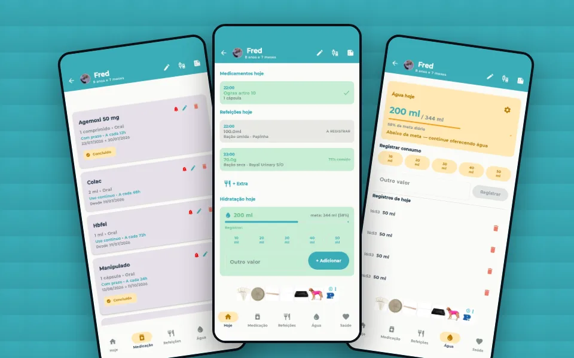
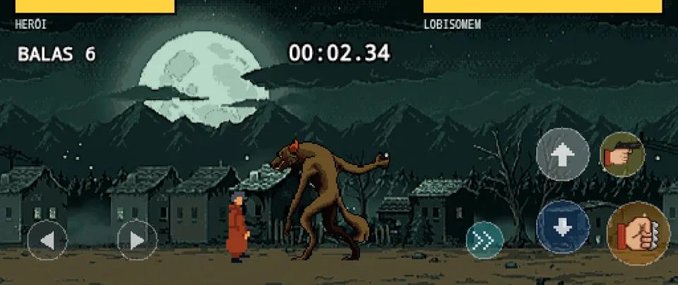
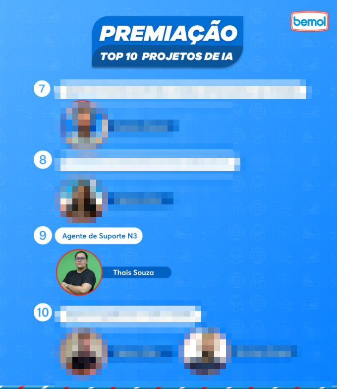
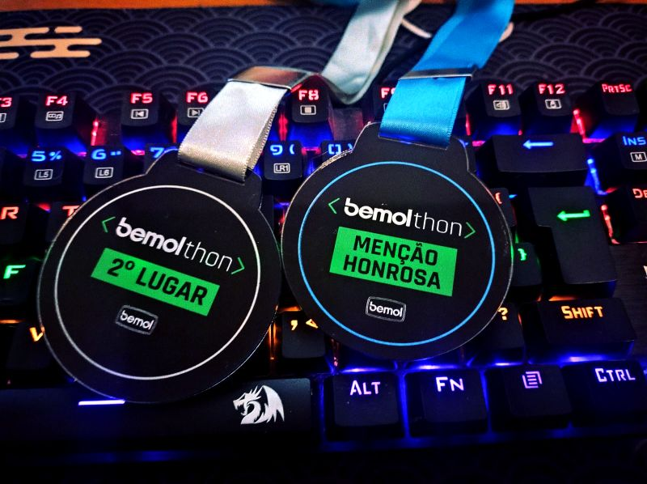
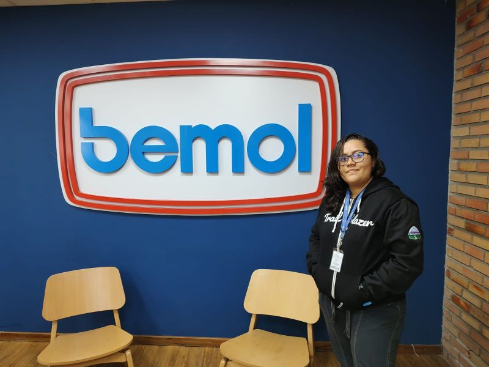

App AndroidCuidadoPet
Rotina de saúde do pet no celular: remédios, vacinas, refeições e água. Publicado na Play Store.
- Kotlin
- Android
- Offline

App AndroidRotina de saúde do pet no celular: remédios, vacinas, refeições e água. Publicado na Play Store.

Jogo · jogável aquiJogo 2D de ação em pixel art. Enfrente ogro, bruxa e lobisomem direto no navegador.
 IA · vídeo
IA · vídeo
Transforma cenas escritas em vídeos verticais narrados, com imagens e voz geradas por IA.
 Bemol Digital
Bemol Digital
7 projetos premiados entre cerca de 200 da campanha de IA da empresa.
Ver detalhes →
Bemol Digital9º lugar com o Agente de Suporte N3, um chatbot para os processos internos.
Ver detalhes →
Hackathon2º Lugar e Menção Honrosa com um projeto que automatiza a criação de casos no Salesforce.
Ver detalhes →
SalesforcePrimeira Ranger e primeira Double Star Ranger da Bemol Digital.
Ver detalhes →